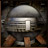
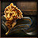

Поиски Сокровищ

4.45K

0

0 / 20

--:--:-- ua
Капитан pirat!
Хотите отправится на поиски сокровищ?!
Предупреждаю, что вас ждет большая опасность в виде других пиратов, а также (только по секрету для Вас) ходят слухи об Адской Нежити...
Три корабля уже пропали за последнюю неделю...
Но все же, если рискнете, можете найти очень большие сокровища!
(Ресурсы, золото или уникальные артефакты).
Решать вам, Капитан!
 | Лучшая награда:
Маленькие Ядра
Ат: +до 150
Скор: +до 100
Нахождение с 30 уровня. |
 | Шанс нахождения от 1 до 1500 - 33%.
Шанс нахождения от 2500 до 15000 - 3%.
Чем дольше длится бой, тем сильнее атакует враг.
Но чем больше монстров вы уничтожите, тем крупнее будет награда! |
Найди Адские сокровища и получи трофей. (Шанс 66%)
Каждое повторное получение улучшит его атаку на +25.
 | Адские Сокровища, трофей
Атака: +200 |
Назад к Монстрам
--:--  0
game-seawar.com ©tg:dev_nwstdio, 2026
0
game-seawar.com ©tg:dev_nwstdio, 2026
# 0.00000 s.